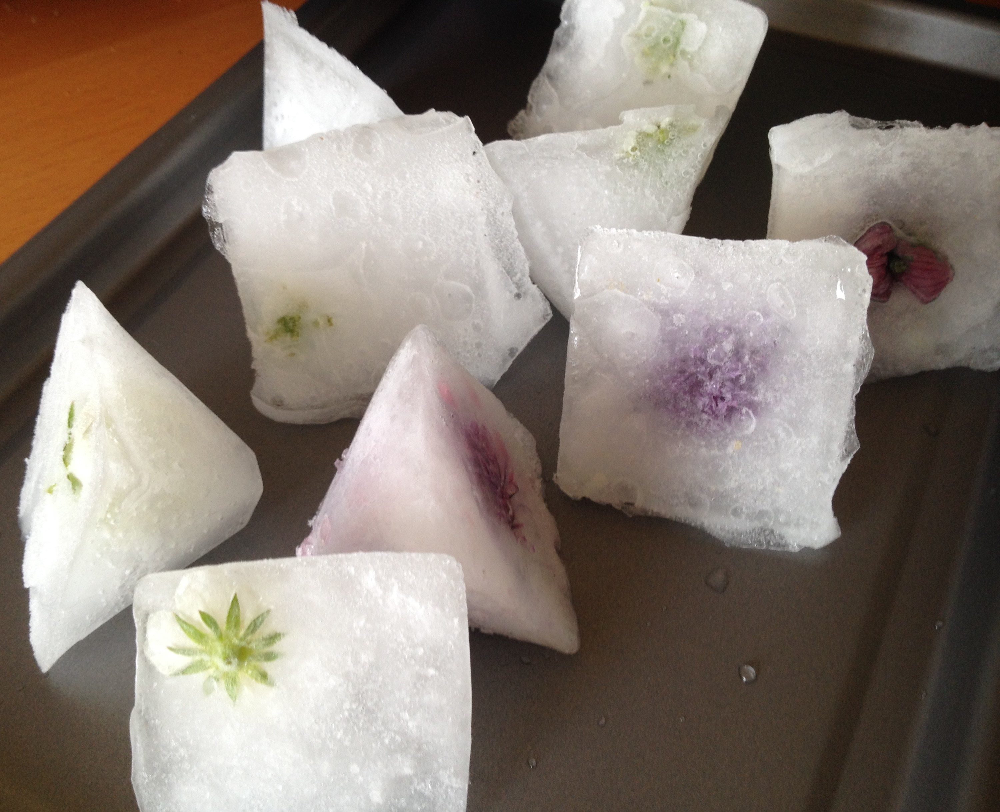
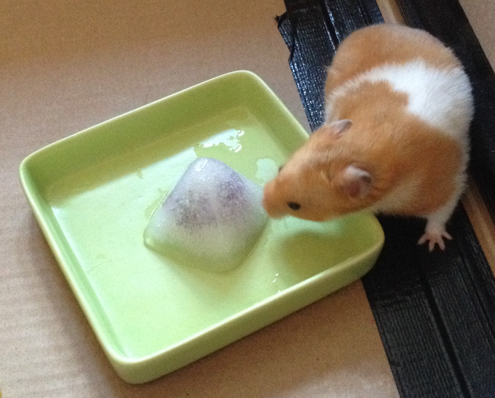

Ice ice baby.
06-Jun-2017 | Milku
A rainy day activity, but I'm not impressed.

It's Day 6 of 30 Days Wild. The wind and rain is deterring my humans from venturing into the outdoors to do something wild. Instead they've decided to check their ice creations.
It was another idea from the 365 Outdoor Activities You Have To Try book - activity #69. My little humans had roamed the garden in search of flowers - at the weekend when it was nice weather. Now there’s aren’t many, even I can see that. The big human that does the gardening likes to grow fruit and vegetables rather than flowers. That's my sort of garden...a source of snacks... who cares what it looks like. I only sneak a peak when it's dark anyway.
Even so, the girls found some flowers on the chives and the water cress. There wasn’t a lot of support for them picking flowers off the strawberries. But the fan of strawberries was the flower picker so it’s her loss…and mine I suppose…although I haven’t tasted a strawberry yet.
Anyway, the flowers were carefully placed in ice cube trays and water was poured on top. They had to be covered to stop them floating. We wanted the flowers encased in ice after all. Then they were put into the freezer. And we waited.
Well, they didn't look quite like the ice creations in the book. Maybe they'd have done better by using different shaped moulds or better flowers. But the little humans liked them. 
I was given one in a tray…ooh, it’s far too cold…maybe if the summer comes back here in Blackpool I’ll try another. 